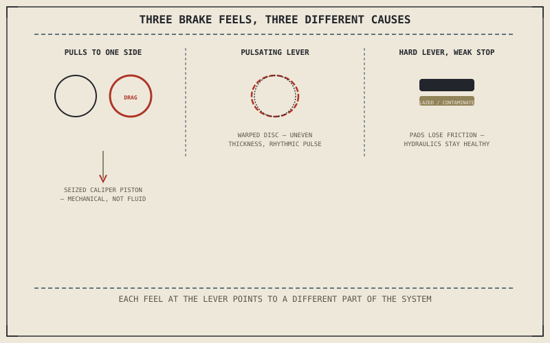

Chapter 11.1 already worked through a spongy brake lever in full, as its opening illustration of symptom-versus-cause diagnosis: air in the line, degraded fluid, or worn pads, three different causes behind one feel at the lever. This chapter covers what Chapter 11.1 didn't need to for that example — the rest of what a braking system can do wrong, each with its own distinct feel rather than a shared one.
Chapter 11.6 closed by turning from the suspension to the system that actually slows the bike down. This chapter covers it.
Pulling to One Side Under Braking
Chapter 7.4 established Pascal's principle as the reason hydraulic pressure transmits undiminished through the fluid to every connected caliper — which means a genuinely hydraulic fault produces an even loss of stopping power, not an uneven pull to one side. A motorcycle that pulls left or right under braking almost always has a mechanical cause instead: a caliper piston that's seized or sticking, dragging that disc continuously and wearing its pads unevenly, or a caliper that isn't releasing fully once the lever is let go. Because the fault sits downstream of the hydraulics Chapter 7.4 described as equal-pressure by nature, this symptom points specifically at the caliper itself rather than anything in the fluid path.
A Pulsating Lever: A Warped Disc, Not a Fluid Problem
A lever or pedal that pulses rhythmically only while braking, in time with wheel rotation, points to a disc that's warped unevenly from excessive heat rather than anything Chapter 11.1's spongy-lever causes covered. An out-of-true disc pushes the caliper pistons back and forth slightly once per rotation, and that motion transmits back through the same incompressible fluid Chapter 7.4 described, felt at the lever as a rhythmic pulse rather than the mushy, non-rhythmic softness a spongy lever produces. Spinning the wheel by hand with the caliper removed and watching the disc pass a fixed reference point confirms this directly.
A spongy lever, a pulsating lever, and a lever that pulls the bike to one side are three different feels at the same control, and each one points to a specific, different part of the braking system rather than a generic "brakes need attention."

A diagram contrasting three brake symptoms: pulling to one side from a dragging caliper, a pulsating lever from a warped disc, and a hard lever with poor stopping power from glazed or contaminated pads.
A Hard Lever With Poor Stopping Power: The Opposite of Spongy
A lever that feels firm and solid, with none of Chapter 11.1's spongy softness, but still produces disappointing stopping power, points away from the fluid and hydraulics entirely and toward the friction surface itself. Pads contaminated by oil, grease, or even certain cleaning chemicals, or pads that have glazed over from sustained overheating, can lose much of their friction while the hydraulic system pushing them stays perfectly healthy — the lever transmits pressure exactly as Chapter 7.4 describes, but that pressure no longer converts into the stopping torque Chapter 7.2 defined. A firm lever paired with weak stopping power rules out the fluid path and points specifically at the pads.
A Common Misconception, Cleared Up Early
It's a common assumption that any complaint about weak or inconsistent braking means the pads are simply worn out and need replacing. A pull to one side, a rhythmic pulse, and a firm lever with poor bite are three specific symptoms this chapter just traced to three different causes — a dragging caliper, a warped disc, and contaminated or glazed pads — and only the last of those is actually a pad problem. Reaching for pad replacement as the default answer to any braking complaint skips the same symptom-to-cause discipline Chapter 11.1 opened this entire part with.
Where This Leads
Brakes act on the wheel; the tyre and wheel themselves are the last part of the chassis this part hasn't diagnosed yet. Chapter 11.8 turns to tyre and wheel problems next.
Key Concepts to Remember
- Pulling to one side under braking is a mechanical caliper fault, not a hydraulic one, since Pascal's principle rules out an uneven fluid-pressure cause.
- A rhythmic pulse at the lever, timed to wheel rotation, points to a warped disc rather than the spongy, non-rhythmic softness of an air or fluid problem.
- A firm lever with weak stopping power rules out the hydraulics and points to contaminated or glazed pads, not necessarily worn ones.
Cross-References
| ← Ch. 11.1 | Used a spongy brake lever as its illustrative example of symptom-versus-cause diagnosis; this chapter covers the braking symptoms that example didn't need to. |
| ← Ch. 7.4 | Established Pascal's principle transmitting pressure evenly through hydraulic fluid; this chapter uses that fact to rule out the hydraulics when a bike pulls to one side. |
| ← Ch. 7.2 | Established stopping torque as what braking force actually produces; this chapter treats a firm lever with weak stopping torque as a sign of contaminated pads. |
| → Ch. 11.8 | Covers diagnosing tyre and wheel problems, the last part of the chassis this part hasn't yet diagnosed. |